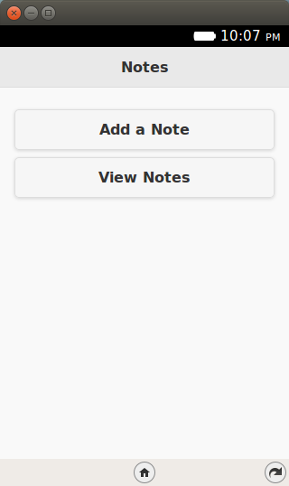
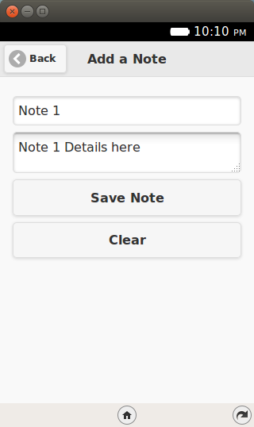
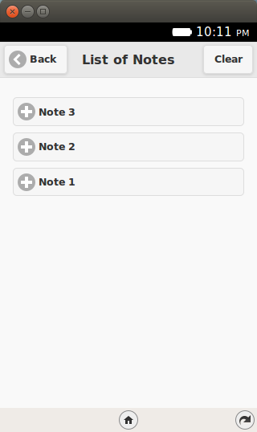
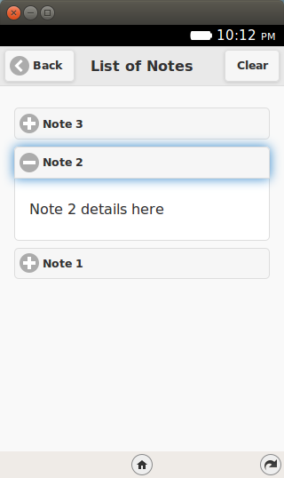
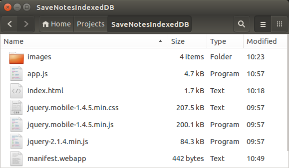

7. Storage using IndexedDB¶
Welcome to Episode 7 of the Firefox OS App Development Tutorial. In the previous episode, we looked at how you could add persistence to your application via the localStorage API. As the objects that you want to persist become more complicated, you can use another HTML5 API called IndexedDB API, which lets you store complex objects. That’s what this episode is about.
7.1. Prerequisites¶
- You have setup your machine with the Firefox OS Simulator. If not, you can check out Overview and Development Setup, which takes you through the entire setup.
- You have a basic understanding of writing Firefox OS Apps. If not, I strongly suggest refering to earlier episodes, especially Hello World, that covers how to write your first Firefox OS App.
7.2. What this Episode Covers¶
- What is the HTML5 IndexedDB API?
- Sample Firefox OS Application that covers using the HTML5 IndexedDB API. We shall be extending the same Notes application that we wrote earlier. We will replace the localStorage API calls with the IndexedDB API calls in this episode.
7.3. Episode 7 in Action¶
Let us check out the application in action first. The application is going to be similar to the previous one and in terms of UI and functionality, there is no difference. But we will repeat it here for the sake of refreshing everything again.
What we shall write is a mobile application that will allow us to save some quick notes. Each note will have a title and some details. These notes will be saved in the Indexed DB of the device and then we can view all our notes too.
All right then, the first screen of the mobile app is shown below:
{kind=link}
When we click on the Add a Note button, we get a screen as shown below where we can enter the title and details for the new note. Once we are done, we can save the note by clicking on the Save Note button.
{kind=link}
If the note is successfully saved, it will display a message as shown below:

To view all the notes, you need to click on the View Notes button from the main screen. This will retrieve all the notes from the Local Storage and display them to you in a collapsible list form.
{kind=link}
You can click on any of the + signs and it will expand to show you the note details as shown below:
{kind=link}
If you wish to delete all the notes, there is also a Clear button. This will delete permanently all the notes from the Local Storage.
Let’s get going with the code. Note that the example screenshots are from the Firefox OS Simulator running locally. So you can use your Firefox OS Simulator to run all the examples.
7.4. Download Full Source Code - Episode 7¶
I suggest that you begin with a full download of the project source code. Since the project depends on libraries like jQuery and jQuery Mobile, it will save you the hassle of downloading the dependent libraries.
Download the code from: https://github.com/anicholakos/SaveNotesIndexedDB
Extract all the code in some directory. You should see a directory structure inside of SaveNotes that looks something like this:
{kind=link}
7.5. HTML5 IndexedDB API¶
The HTML5 IndexedDB API is another JavaScript API that allows you to build persistence in your web applications. At the end of the day, it is similar at a high level with the localStorage API that you saw in the previous episode.
But it does have some important differences and these points will help you a bit in evaluating which way to go.
- LocalStorage using key pairs is good for data types and objects that are simple in nature. Often as the objects that you persist get complicated, you will notice that you will have to play a lot with JSON parsing and stringifying. IndexedDB is meant to address that by allowing you to persist complex objects and even create indices on key fields to help you retrieve easily.
- LocalStorage API is synchronous in nature. This means that you should ensure that your API operations are quick, else you could end up blocking the User Interface. The IndexedDB API is asynchronous in nature and this means that you are not blocking your UI to complete the operation. You make the call and once it is done, the result (either onsuccess or onerror is a callback to your functions).
- LocalStorage API is much simpler to use than IndexedDB API and which you shall see in a while but several wrappers do exist that sort of abstract out the API complexity.
- Searching through LocalStorage API is a challenge. On the other hand, in the IndexedDB world, you can create indices and search on them via various criteria.
A few things to note about the IndexedDB API:
- The IndexedDB API allows your application to create data stores.
- Each datastore can be analogous to saving one type of data. For example, products, notes, or employees.
- The store contains records of data and you can define a key for your data and the values. The key can be autogenerated or even user provided. The value will contain your object.
- You can define one or more indices on your data and that makes it easier to search through the data.
7.6. SaveNotesIndexedDB Application¶
OK. Lets get going with understand the code and how the IndexedDB API has been used to persist (save) notes in our application.
7.7. SaveNotesIndexDB Application - manifest.webapp¶
1 2 3 4 5 6 7 8 9 10 11 12 13 14 15 16 | {
"version": "2.0",
"name": "Notes",
"description": "Uses the HTML5 Indexed API to demonstrate how to save data in your Firefox OS Apps.",
"launch_path": "/index.html",
"fullscreen": "false",
"icons": {
"128": "/images/notes_128.png",
"512": "/images/notes_512.png"
},
"developer": {
"name": "Romin Irani",
"url": "http://www.rominirani.com"
},
"default_locale": "en"
}
|
7.8. SaveNotes Application - index.html¶
Next up is the index.html page and it is a simple jQuery Mobile page.
1 2 3 4 5 6 7 8 9 10 11 12 13 14 15 16 17 18 19 20 21 22 23 24 25 26 27 28 29 30 31 32 33 34 35 36 37 38 39 40 41 42 43 44 45 46 47 48 49 50 51 52 53 54 55 56 57 58 59 60 61 62 | <!DOCTYPE html>
<html>
<head>
<meta charset="utf-8">
<meta name="viewport" content="width=device-width, initial-scale=1">
<title>Notes</title>
<link rel="stylesheet" href="jquery.mobile-1.4.5.min.css">
<script src="jquery-2.1.4.min.js"></script>
<script src="jquery.mobile-1.4.5.min.js"></script>
<script src="app.js"></script>
</head>
<body>
<!-- Start of first page: #home -->
<div data-role="page" id="home">
<div data-role="header" data-position="fixed">
<h3>Notes</h3>
</div><!-- /header -->
<div data-role="content">
<a href="#" id="btnAddNote" data-role="button">Add a Note</a>
<a href="#" id="btnViewNotes" data-role="button">View Notes</a>
</div><!-- /content -->
</div><!-- /page home -->
<!-- Start of the second page : #add-notes -->
<div data-role="page" id="add-notes">
<div data-role="header" data-add-back-btn="true">
<h1>Add a Note</h1>
</div>
<div data-role="content">
<input type="text" id="noteTitle" value="" placeholder="Title" autofocus>
<textarea placeholder="Details" name="noteDetails" id="noteDetails">
</textarea>
<a href="#" id="btnSaveNote" data-role="button">Save Note</a>
<a href="#" id="btnClearNotes" data-role="button">Clear</a>
</div>
</div><!-- /page add-notes -->
<!-- Start of the third page : #view-notes -->
<div data-role="page" id="view-notes">
<div data-role="header" id="header" data-add-back-btn="true">
<h1>List of Notes</h1>
<a href="#" data-role="button" class="ui-btn-right"
id="clearAllNotesBtn">Clear</a>
</div>
<div id="note-list" data-role="content">
</div>
</div><!-- /page view-notes -->
</body>
</html>
|
Let us discuss the index.html page in detail now:
We have included the script in the app.js file on Line 11.
- There are 3 pages in the mobile application:
- home (Lines 17-28).
- add-notes (Lines 31-44).
- view-notes (Lines 47-59).
The #home page has two buttons for Add a Note and View Notes.
The #add-notes page has a form for entering the title (#noteTile), details (#noteDetails) and two buttons for saving the note (#btnSaveNote) and clearing the fields (#btnClearNotes).
The #view-notes page has a button in the header to clear all notes (#clearAllNotesBtn) and it has a div area (#note-list) to display all current notes, once we get them from the Local Storage.
7.9. SaveNotesIndexedDB Application - app.js¶
1 2 3 4 5 6 7 8 9 10 11 12 13 14 15 16 17 18 19 20 21 22 23 24 25 26 27 28 29 30 31 32 33 34 35 36 37 38 39 40 41 42 43 44 45 46 47 48 49 50 51 52 53 54 55 56 57 58 59 60 61 62 63 64 65 66 67 68 69 70 71 72 73 74 75 76 77 78 79 80 81 82 83 84 85 86 87 88 89 90 91 92 93 94 95 96 97 98 99 100 101 102 103 104 105 106 107 108 109 110 111 112 113 114 115 116 117 118 119 120 121 122 123 124 125 126 127 128 129 130 131 132 133 134 135 136 | // variable which will hold the database connection
var db;
function initializeDB() {
if (window.indexedDB) {
console.log("Your environment supports IndexedDB");
}
else {
alert("Indexed DB is not supported. Where are you trying to run this?");
}
// open the database
// 1st parameter : Database name. We are using the name 'notesdb'
// 2nd parameter is the version of the database.
var request = indexedDB.open('notesdb', 1);
request.onsuccess = function(e) {
// e.target.result has the connection to the database
db = e.target.result;
}
request.onerror = function(e) {
console.log(e);
};
// this will fire when the version of the database changes
// We can only create Object stores in a versionchange transaction.
request.onupgradeneeded = function(e) {
// e.target.result holds the connection to database
db = e.target.result;
if (db.objectStoreNames.contains("notes")) {
db.deleteObjectStore("notes");
}
// create a store named 'notes'
// 1st parameter is the store name
// 2nd parameter is the key field that we can specify here. Here we have
// opted for autoIncrement but it could be your own provided value also.
var objectStore = db.createObjectStore('notes', {keyPath: 'id',
autoIncrement: true });
console.log("Object Store has been created");
};
}
$(document).ready(function() {
//Initialize the Database first
initializeDB();
$("#btnAddNote").click(function() {
//Change to the add-notes
$.mobile.changePage($("#add-notes"));
});
$("#btnViewNotes").click(function() {
//Change to the add-notes
$.mobile.changePage($("#view-notes"));
//Empty the list first
$("#note-list").html("");
//Read the notes
var transaction = db.transaction([ 'notes' ]);
var store = transaction.objectStore('notes');
// open a cursor to retrieve all items from the 'notes' store
store.openCursor().onsuccess = function(e) {
var cursor = e.target.result;
if (cursor) {
var value = cursor.value;
var noteElement = $("<div data-role='collapsible' data-mini='true'>");
var h3NoteTitle = $("<h3/>").text(value.title);
var pNoteDetails = $("<p/>").text(value.details);
noteElement.append(h3NoteTitle);
noteElement.append(pNoteDetails);
$("#note-list").append(noteElement);
// move to the next item in the cursor
cursor.continue();
}
$('div[data-role=collapsible]').collapsible({refresh:true});
};
});
//Click Handlers for Add Notes page
$("#btnSaveNote").click(function() {
var noteTitle = $("#noteTitle").val();
var noteDetails = $("#noteDetails").val();
// Create the transaction with 1st parameter is the list of stores and
// the second specifies a flag for the readwrite option
var transaction = db.transaction([ 'notes' ], 'readwrite');
// Create the Object to be saved i.e. our Note
var value = {
title: noteTitle,
details: noteDetails
};
// Add the note to the store
var store = transaction.objectStore('notes');
var request = store.add(value);
request.onsuccess = function(e) {
alert("Your note has been saved");
};
// Clear input areas for new note
$("#noteTitle").val("");
$("#noteDetails").val("");
request.onerror = function(e) {
alert("Error in saving the note. Reason: " + e.value);
}
});
$("#btnClearNotes").click(function() {
$("#noteTitle").val("");
$("#noteDetails").val("");
$("#noteTitle").focus();
});
//Click Handlers for View Notes page
$("#clearAllNotesBtn").click(function() {
var transaction = db.transaction([ 'notes' ], 'readwrite');
var store = transaction.objectStore('notes');
// Delete all the notes
// Alternately if you know the ID, you can use store.delete(ID) for
// individual item deletion
var request = store.clear();
request.onsuccess = function() {
$("#note-list").html("");
alert("All Notes have been cleared");
}
request.onerror = function(e) {
alert("Error while deleting notes: " + e.value);
};
});
});
|
Let us discuss the source code in detail now since it contains the HTML5 IndexedDB JavaScript API:
- First, the standard stuff. Line 48, the standard jQuery ready function, is fired and the first thing that we are invoking here is a call to the initializeDB() function. In this function, we shall create the database+store and get it ready for other operations.
- In line 2 we define our db variable that will hold the connection to the database that we shall use subsequently when we add records, delete records, search for records, etc.
- The initializeDB() function is defined in lines 4-46.
- We check first for IndexedDB support by checking the property indexedDB in the window object. This will typically not be needed since the support is there, but I am just showing you this in case you want to introduce this code to other browsers via your desktop web applications too. Keep in mind that this is an evolving standard and support is not fully there across all browsers. For FirefoxOS, you can rest assured that support is present.
- On line 13 we open our database. We are naming the database notesdb and providing a version of the database – 1 in this case. Keep in mind that the IndexedDB API is an asynchronous API, so we are defined two callbacks: onsuccess and onerror. In onsuccess, we initialize the db variable to the database that we just opened.
- Great. Now that we have the connection to the database, we need to create the initial object store. Think of creating the initial tables. For this we need the onupgradeneeded callback that is defined on line 29. This function is only called when a version change occurs. We had passed the version 1 earlier and since there is no database present, it will get invoked the first time and we can then create our data stores here. If you ever want to change the schema or modify the store, you should change the version number in your upgraded version of the app when you open the database as shown on line 15.
- On line 41, we are creating our Object Store named notes. Keep in mind that we can create more object stores but since we are just dealing with notes here, I am creating only one. Apart from the first parameter which is the store name, the second parameter is the key field for your object. We are defining it as an auto-increment field with the key name as ID.
- This completes our initialization of the database. To summarize we opened the connection to the database (notesdb) and created one object store (notes). The notes that we create in the application will be saved in the notes datastore.
- Let us now focus on adding or aaving the note. Look at lines 86–114. Here you will notice that we first extract out the value that the user has entered for title and detail. Then on line 100, we first create a transaction object from the database. To create the transaction, you can provide a list of datastore names (in our case it is just one i.e. notes) and the transaction mode like read or readwrite. Since we want to write a new record, we are using the readwrite mode.
- On line 95, we are creating the standard Notes object. We store the attributes for title and details.
- Now within the transaction context, we obtain the store that we want to work with on line ?? and then add the object to it. We use the onsuccess and onerror callbacks as needed.
- Now let us focus on lines ??-??. Lines ??–?? indicate that when we press the View Notes button on the index page, it will navigate to the view-notes page.
- We clear the content i.e. any existing items that were present on the page by clearing the HTML content for #note-list on line ??.
- Then once again we obtain the transaction object from the database. This time we pass only the list of datastore names (in our case just notes). If you do not provide the second parameter i.e. transaction mode, it means that it is read mode. We then object the store from the transaction context on line ??.
- Next we use a cursor to iterate through each of the notes object and build out the notes HTMLElement that we shall create for each note. Notice the use of cursor.continue() on line ?? to move to the next record.
- Then for each note, we are simply creating a collapsible div for jQuery Mobile UI and appending it to the #note-list element.
- Clearing (Deleting) all the notes is also straightforward. Refer to lines ??–??. The pattern of usage is the same. Get the transaction. Get the store. And then call the clear() function on the store.
7.10. Next Steps¶
I encourage you to learn more about the IndexedDB API. Mozilla covers this in a lot more detail on a page on the MDN named Using Indexed DB. A good exercise to try out would be to come up with your own little database design. Come up with a DB and some data stores. Create some indices and play around with basic CRUD Operations.